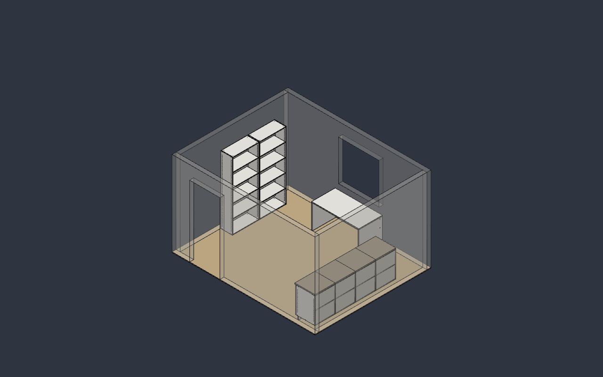
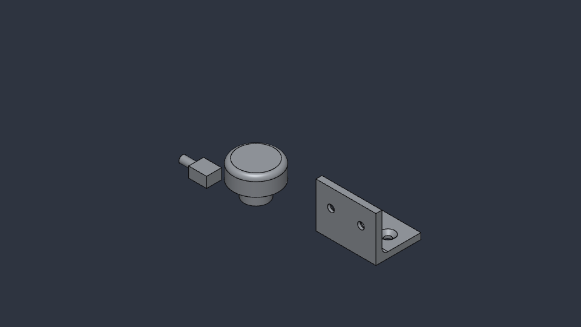
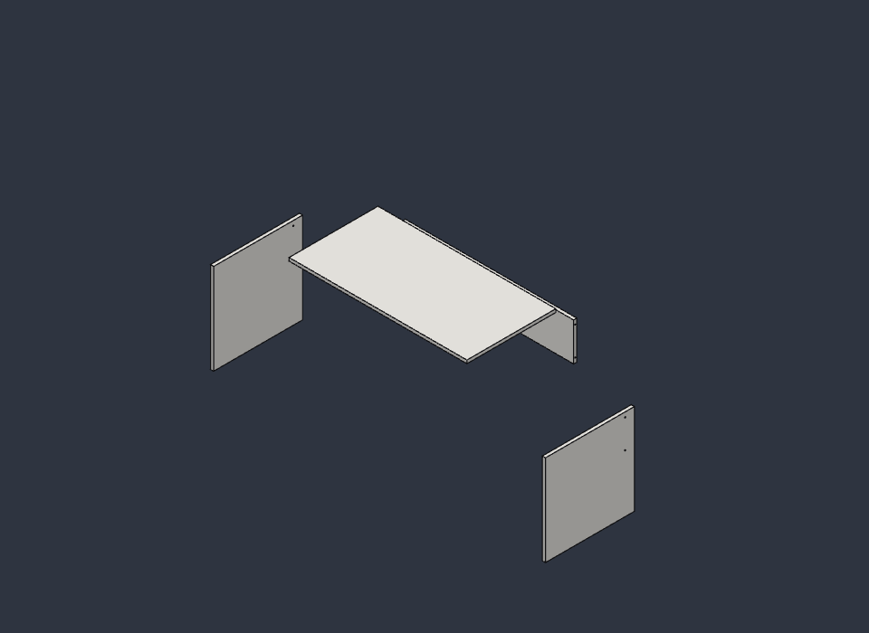
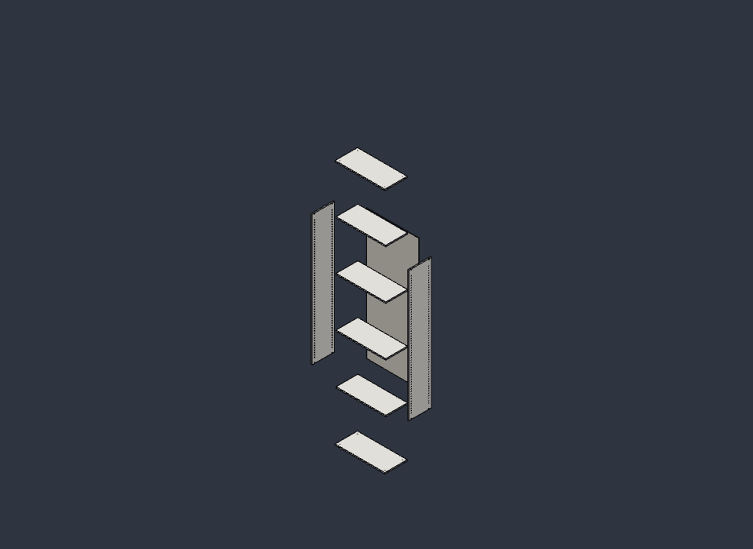
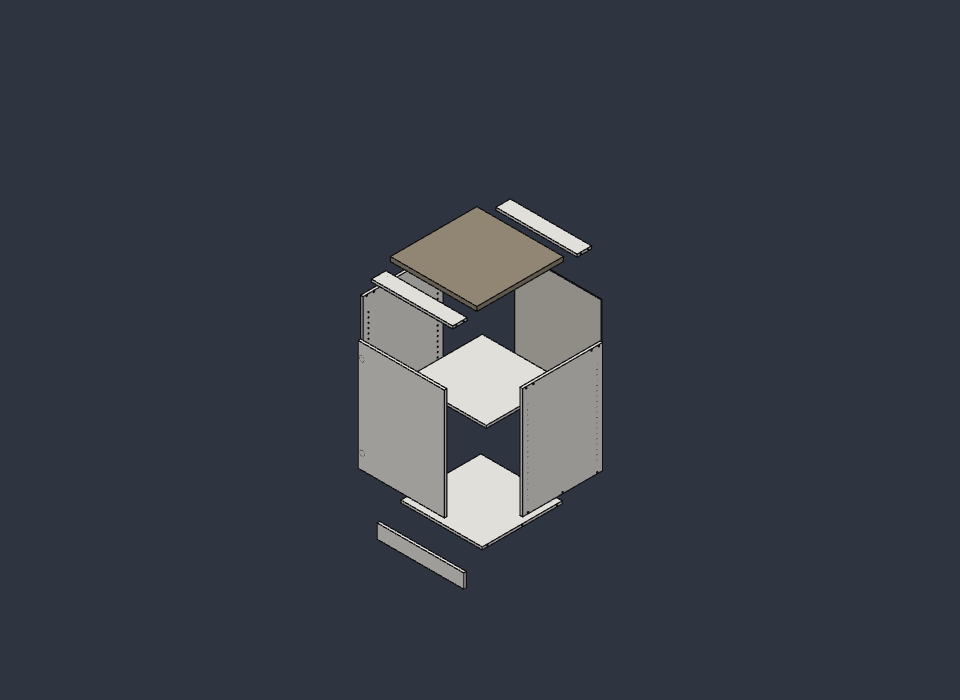

Eksempelrom
Monteringsanvisning · 4000 × 3200 mm · 7 moduler
62MDF-deler
23,1 m²MDF
563D-printede deler
316skruer og beslag

Verktøy
Drill med bits for konfirmatskruer (unbrako/torx), Ø2,5-bor, loddebolt for gjengeinnsatser, vater og tommestokk.
Del-ID-en står på hver plate i DXF-filene og i delelista. Sorter platene per modul før du begynner.
Plastdeler (3D-print)

| Del | Antall |
|---|
Vinkelbeslag 40 mm
Print stående på den lange kanten for sterkest hjørne | 4 |
Hyllebærer Ø5
Print liggende på siden, tappen langs byggeplata | 48 |
Knott Ø30
Print stående på den flate undersiden (halsen ned). Gjengeinnsats M4 presses inn med loddebolt | 4 |
Skrivebord SB-01
1400 × 700 × 740 mm · 1 stk

Deler per skrivebord
| ID | Del | Mål | Ant. |
|---|
| GAVL | Gavl | 715×700×25 | 2 |
| TOPP | Bordplate | 1400×700×25 | 1 |
| RYGG | Rygg | 1350×300×25 | 1 |
Beslag per skrivebord
| Vinkelbeslag (3D-print, plast) | 4 |
| Sponplateskrue 4×16 | 16 |
| Justerbar glider | 4 |
| Konfirmatskrue 7×50 | 4 |
Montering
- Sett ryggen mellom gavlene og skru konfirmatskruene (7×50) gjennom gavlene og inn i kantene.
- Skru to vinkelbeslag på innsiden av hver gavl, i flukt med overkanten. Forbor Ø2,5 og bruk 4×16.
- Legg bordplata med undersiden opp på et mykt underlag. Sett understellet opp ned på plata, sentrert.
- Skru vinkelbeslagene fast i bordplata (4×16). Forbor Ø2,5, maks 15 mm dypt.
- Skru inn glidere under gavlene, snu bordet og juster.
Hylle HY-01, HY-02
800 × 350 × 2000 mm · 2 stk

Deler per hylle
| ID | Del | Mål | Ant. |
|---|
| SIDE | Side | 2000×344×18 | 2 |
| TOPP | Topp | 764×344×18 | 1 |
| BUNN | Bunn | 764×344×18 | 1 |
| HYLLE | Løs hylle | 762×334×18 | 4 |
| BAK | Bakplate | 2000×800×6 | 1 |
Beslag per hylle
| Konfirmatskrue 7×50 | 8 |
| Hyllebærer Ø5 (3D-print, plast) | 16 |
| Veggfeste / tippsikring | 2 |
| Sponplateskrue 3,5×16 | 38 |
Montering
- Legg den ene sida ned med hyllehullene opp. Sett topp og bunn på plass.
- Skru konfirmatskruene (7×50) gjennom sida og inn i kantene. Sett på den andre sida og gjenta.
- Mål diagonalene og skru bakplata fast med sponplateskruer 3,5×16.
- Reis hylla og fest den til veggen med veggfestet. Det er viktig: høye hyller kan velte.
- Sett hyllebærerne i 32 mm-hullene og legg inn hyllene.
Underskap UK-01, UK-02, UK-03, UK-04
600 × 600 × 900 mm · 4 stk

Deler per underskap
| ID | Del | Mål | Ant. |
|---|
| SIDE | Side | 770×554×18 | 2 |
| BUNN | Bunn | 564×554×18 | 1 |
| REKKE | Topprekke | 564×100×18 | 2 |
| BAK | Bakplate | 770×600×6 | 1 |
| SOKKEL | Sokkelfront | 600×98×18 | 1 |
| HYLLE | Løs hylle | 562×534×18 | 1 |
| DOR | Dør | 767×597×18 | 1 |
| BENK | Benkeplate | 600×600×30 | 1 |
Beslag per underskap
| Konfirmatskrue 7×50 | 14 |
| Justerbart skapben | 4 |
| Sokkelklips | 2 |
| Sponplateskrue 3,5×16 | 19 |
| Hengsel Ø35 med demping | 2 |
| Knott Ø30 (3D-print, plast) | 1 |
| Gjengeinnsats M4 (messing, for knott) | 1 |
| Maskinskrue M4×25 (knott) | 1 |
| Hyllebærer Ø5 (3D-print, plast) | 4 |
| Sponplateskrue 4×40 (benkeplate) | 6 |
Montering
- Skru de fire justerbare skapbena fast under bunnplata, ca. 50 mm inn fra hjørnene.
- Sett bunnen mellom sidene. Skru konfirmatskruene (7×50) gjennom Ø7-hullene i sidene og inn i Ø5-forboringene i kanten av bunnen.
- Monter de to topprekkene på samme måte, én foran og én bak.
- Mål diagonalene. Når de er like er skapet i vinkel. Skru bakplata fast med sponplateskruer 3,5×16.
- Skru hengselplatene på innsiden av sida. Trykk hengslene i Ø35-koppene i døra, heng på døra og juster fugen til 3 mm.
- Varm gjengeinnsatsen inn i knotten med loddebolt. Skru knotten fast med M4×25 fra innsiden av døra.
- Sett hyllebærerne i 32 mm-hullene i ønsket høyde og legg på hylla.
- Klips sokkelfronten på bena. Legg på benkeplata og skru den fast nedenfra gjennom topprekkene (4×40).